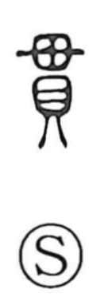

貫

Uncategorized
Kun: tsuranuku, tsuraneru | On: kan
to pierce ・ to penetrate ・ to thread through ・ continuity ・ connection ・ custom ・ convention
Explanation
A compound character combining 毌 and 貝. Early forms depict piles of shells bound by a cord: 貝 represents shell money, while 毌 shows the act of piercing or threading. From this concrete image of coins strung on a line arises the core meaning “to pierce, to thread through.” By extension it came to express what runs through or links things over time and place—continuity and connectedness—and it was even used for the sense of established practice or custom, a meaning later written with 慣.